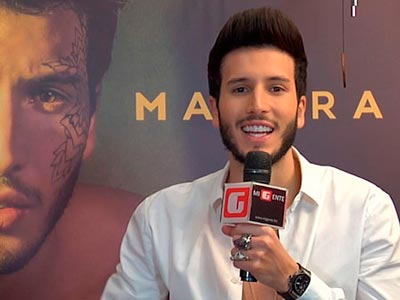
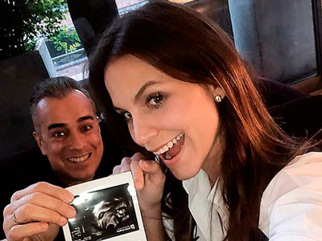
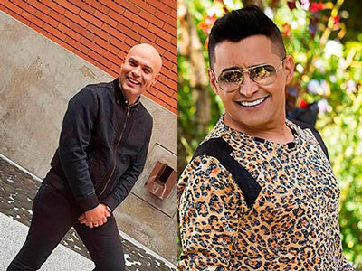
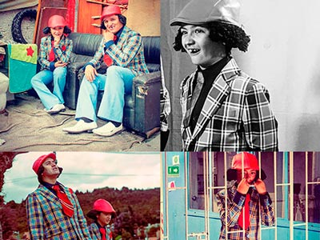
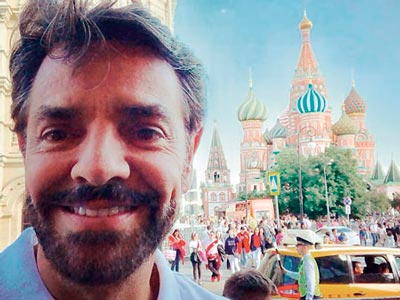
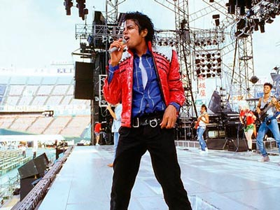
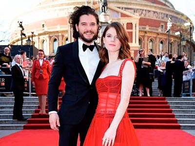

Chismes

¡SE CRECIÓ BRYAN MUÑOZ!
Inició su carrera musical con tan solo 11 años en el programa de televisión Factor Xs, desde ese momento no ha parado de trabajar para seguir entregando su música al público que tanto le ha dado, cantando género popular ha tenido la oportunidad de compartir con artistas muy importantes como Jhonny Rivera y en esta oportunidad presenta su más reciente lanzamiento junto a El Andariego, –Se puede confundir-, es el nombre de este sencillo que dará mucho de qué hablar.

¡LO MÁS CURIOSO DE SEBASTIAN YATRA!
Con el lanzamiento de su nuevo álbum Mantra que contiene sus mayores éxitos desde –Traicionera– hasta –Por Perro– este artista nos reveló algunos datos que estamos seguros le interesa a sus seguidores y a todos aquellos que disfrutan de su música, si querías saber que invitar a comer a Sebastián te tenemos ese dato curioso, su comida favorita es la mexicana, le encantan los tacos al pastor; el mejor público o con el que ha sentido una conexión fuerte es el argentino, claro está que el número uno es el colombiano.
¡NUEVOS SOCIOS!
La trayectoria exitosa que inició con mucho trabajo, sacrificios y dedicación, hoy rinde los frutos que el artista Yeison Jiménez pensó recoger. Con varios éxitos musicales, no baja la guardia y continúa trabajando en nuevos proyectos tanto a nivel musical como empresarial, en esta oportunidad nos contó que se convirtió en el nuevo socio de la empresa Correo de la Noche de la mano de su manager Rafael Muñoz a quien Yeison apoya al cien por ciento.
¡ELECTROCARIBE PAL MUNDO!
Amaru y Angelik son un par de bogotanos genuinos que pasan por el Caribe pero también, coquetean con el Pacífico y no dejan atrás las manifestaciones musicales extranjeras y contemporáneas, así es su música. Con influencias de todos lados, porque ellos van más allá, Jamaruk se presentó el pasado 14 de junio en las tablas del Teatro Mayor, en Bogotá. Amaru y Angelik tiene la convicción de que su electrocaribe es poderoso, por lo que la respuesta del público en esta presentación los dejó satisfechos, al poder contagiar aquellos bogotanos que no los conocían pero que disfrutaron de su música.
¡SIN PELOS EN LA LENGUA!
Foto: Tomado de @paolajarapj
En una entrevista la cantante Paola Jara confesó los retoques que se ha realizado a lo largo de su vida, sin pena contó cada una de las cirugías que tiene en este momento, algo que no le afecta pero si deja claro que lo importante no es la belleza física sino el talento y la humildad. Contó que es una mujer vanidosa y le gusta sentirse y verse bien por lo que se ha sometido a una mamoplastia, rinoplastia y una mini lipo en su cintura.
ESTILO Y BELLEZA DE LA MANO DE JHONNY RIVERA
Jhonny Rivera sorprende a todos sus seguidores de Pereira con la apertura de su barbería “Eleganza” este nuevo proyecto es un logro alcanzado para el artista, estamos seguros que será todo un éxito, como todo lo que proyecta en su vida y carrera artística.

¡PADRE A SUS 50 AÑOS!
Foto: Tomado de @jeabello
El actor Jorge Enrique Abello que encarnó al recordado don Armando Mendoza en ‘Yo soy Betty, la fea’, confirmó la noticia con una ecografía. El artista reveló el sexo del bebé que tendrá con su esposa, la modelo y arquitecta María Isabel Gutiérrez. ¡Sera un niño! Aunque no es su primer hijo ya que el actor tiene una hija de 16 años de su anterior relación, el convertirse en padre a sus 50 años será toda una aventura.
EX PROTAGONISTA DE NOVELA Y CHICA MUNDIALISTA BOGA SERÁ LA NUEVA CARA DE “LA RED”
Después de su participación en este reality, la despampanante Laura González, sigue concentrada en seguir su carrera como presentadora y actriz por lo que ahora la veremos como “La novia del Mundial”, un nuevo contenido de La Red, en este reto para Laura, tendrá varias sesiones fotográficas, además de cubrir notas en el mundial, obviamente, con el tinte propio del programa de entretenimiento.
¡PAL CARAJO!
Una historia de desamor trae en su nuevo sencillo Donny Caballero con este trabajo busca regresar a la escena musical con ritmos urbanos para gozar, divertirse y disfrutar. Este sencillo estuvo a cargo de los reconocidos productores Carlos Restrepo y Luis Abril, encargados de fusionar sonidos urbanos creando la nueva propuesta del artista colombiano. Con más de 10 años de carrera musical, seguirá creando música tal y como la siente y demostrando porque es uno de los exponentes más importantes del género.
FESTIVAL CULTURAL DE LA CHAMPETA
Foto: Tomado de @youngfelprefe y @oscarprinceoficial
Este festival es una vitrina para presentar nuevos artistas, posicionar aquellos que están en proyección y mostrar a los más importantes de la industria musical, se encarga de galardonar a los exponentes de la champeta como uno de los movimientos musicales más fuertes del país, sin dejar atrás a otros géneros que también serán premiados en esta su segunda versión, será el día viernes 17 de agosto en la Plaza de la Aduana en Cartagena a partir de las 5:00 pm, los invitados especiales pasarán por la Alfombra Caribe y se deleitarán con la ceremonia de clausura del festival, el cual hace homenaje este año a la Organización Musical Rey de Rocha. Dentro de los artistas invitados estarán Tomas Alfonso “Poncho” Zuleta, Alfredo de la Fe, Andrés Ariza Villazón, Danny Daniel, Mr. Black, Oscar Prince, Will Fiorillo, Young F, entre otros.
¿ROBAN A MALUMA?
Foto: Tomado de @maluma
Asi es, en la ciudad de Moscú el cantante fue víctima de los amigos de lo ajeno, según las autoridades el monto del robo asciende a los 800 mil dólares, lo peor de todo es que según la investigación policial el perpetrador ingresó a su habitación en el Hotel Four Season con una copia de la llave, entre los objetos hurtados estaba un bolso Louis Vuitton, un estuche de relojes, joyería y una sumas aproximada de 130 mil dólares.

OMAR ENRIQUE JUNTO JORGE CELEDÓN
Omar Enrique logró lo que no ha podido nadie, sacar por primera vez, a Jorge Celedón del género del vallenato. Es así como al son de la bachata se puede disfrutar de este tema musical, que acopla a la perfección las voces de estos dos importantes intérpretes.

“PA LAS QUE SEA PAPÁ”
Será la nueva película de Harold Trompetero la cual cuenta con un gran elenco Hassam, Carolina Acevedo, Ayda Morales, Diego Camargo, Tavo Bernate, Bebsabe Duque, Carlos Hurtado, Aliana Lozano con la actuación del pequeño Carlos Andrés Ramirez, quien interpretará al hijo de Hassam un actor en ascenso que después de ser nominado a los Premios India Catalina busca seguir alimentando su experiencia y que mejor oportunidad que en esta película acompañado de grandes actores y un excelente director.

JAMES RODRÍGUEZ RECHAZA A LA CONOCIDA FAN RUSA HELGA LOVEKATY
Foto: Tomado de @jamesrodriguez10
Lovekaty llegó al lobby del hotel donde se hospeda la Selección Colombia y otras selecciones presentes en ese lugar de concentración, la modelo llegó en busca del colombiano y otros de los jugadores de la cual es fanática, sin embargo la respuesta del colombiano a la petición de Helga fue rotunda al negarse a un encuentro con la hermosa mujer por lo que se tuvo que conformar con las fotos y autógrafos de otros jugadores.
HOMENAJE A GEORGE CLOONEY
El American Film Institute se encarga de honrar a aquellos personajes de la industria cinematográfica que con su gran trabajo y trayectoria hacen del cine una mejor herramienta, cambiando continuamente su forma de verlo y hacerlo. Este año el escogido para este gran honor es para el actor, productor y guionista estadounidense George Clooney, quien a sus 57 años ha sido galardonado con cuatro Globos de Oro, dos Óscar y un Bafta.
NOVIA DE CRISTIANO RONALDO LUCE ENORME ANILLO
Durante un partido de la Selección Portuguesa, la argentina Georgina Rodríguez portó un enorme anillo en el dedo anular de la mano izquierda, desatando rumores de un posible compromiso. Ni el futbolista ni Georgina han dado declaraciones al respecto, solo queda esperar a que anuncien si en realidad Cristiano dará el sí en el altar.

¡BROMA PESADA!
Eugenio Derbez y su hijo Vadhir están en Rusia para disfrutar de la Copa Mundial de la FIFA, padre e hijo se impusieron retos antes de la victoria del Tri ante Alemania, pero no todo acabó muy bien para el actor; el mexicano se coló en una transmisión en vivo donde empezó a hacer chistes con los comentaristas de deportes de un programa de televisión, la broma no fue del agrado de la producción y un agente de seguridad sacó a Eugenio del lugar en contra de su voluntad.

LA LEYENDA SIGUE VIVA
“El rey del pop” sigue más vigente, obra inspirada en Michael Jackson, estrenaría en 2020 en Broadway, anunciaron hoy la familia y allegados del fallecido cantante que llegaron a un acuerdo con Columbia Live Stage para desarrollar el espectáculo, el musical que aún no tiene título, será escrito por la dramaturga Lynn Nottage, quien en 2009 recibió el Premio Pulitzer en la categoría teatro por Ruined.
¿YAN COLLAZO ENAMORADO?
El artista puertorriqueño presenta el vídeo oficial de su gran éxito –Enamorado y qué– el vídeo relata la historia de las relaciones que se van deteriorando por la monotonía, fue rodado en la ciudad de Medellín. Yan Collazo se prepara para sus presentaciones en Canadá, Colombia, Panamá, Chile, Perú y España donde seguirá demostrando el talento y calidad artística que tanto lo identifica.

“JON SNOW”, ES OFICIAL SE CASARÓN
Kit Harington y Rose Leslie se comprometieron el año pasado. Un anuncio en un periódico británico dio la noticia de que esta relación, nacida en el set de Game of Thrones, terminaría en el altar. Se casaron el pasado 23 de junio, los actores que interpretan a Jon Snow e Ygritte en la serie pasaron de la ficción a la realidad. Esperamos sea un matrimonio feliz y próspero.